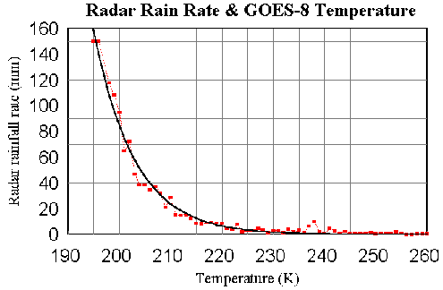

Precipitation is an essential component
of the hydrological cycle and probably is the most important climatic variable
of the Amazonian water balance. Accurately estimating precipitation rates
in the Amazon Basin has been a significant challenge, because it has very
few rain gauges and receives large amounts of rainfall. Willmott et
al. (1994) estimates that, for the region’s gauge density (fewer than
20 stations per 106 km2), estimates of precipitation
can be in error by as much as 100 to 700 mm/yr. The low rain gauge density is also
reflected in the quality of studies that use rainfall as input data.
For example, in a simulation study of Amazonian river discharge as a function
of land cover and climatic conditions, Costa and Foley (1997) showed that
uncertainties in the rainfall data in western Amazon basin (where rain
gauge density is lower) was one of the most important factors that contributed
to errors in the simulated discharges, even at locations thousands of kilometers
downstream.
In order to minimize the gauge density
problem, satellite measurements and numerical models have been widely used
in recent years. The rainfall estimates provided by the assimilation of
the results of numerical weather prediction models present several problems,
including low resolution and undulations associated with the spectral representation
of topography in such models (Costa and Foley, 1998). On the other hand,
satellite estimates can have high resolution, and accuracy depends on
the technique and calibration used. The most common satellite rainfall
estimation techniques rely on cloud top temperature infrared (IR) measurements
only (Martin et al., 1990), microwave (MW) measurements (Negri et
al., 1994) or on the combination of IR and MW (Vicente, 1994). The
IR-only technique is the most indirect approach because it relies on the
statistical interpretation of cloud top temperature. However it provides
very high temporal resolution for the estimates since the temperature measurements
are made by a satellite on a geosynchronous orbit. The MW technique provides
the most accurate measurement of instantaneous rainfall rates, because
the precipitation amounts are physically related to the cloud MW radiation
emission and scattering. However, this technique can only provide estimates
a few times a day over a narrow area because it relies on measurements
made from a polar orbiting satellite. The techniques that use both IR and
MW take advantage of the strengths of both measurements.
In order to address the request of the
US National Weather Service (NWS) for an operational, automated and highly
accurate satellite rainfall estimation technique, G. Vicente and R. Scofield
(two of the authors of this proposal) have developed in recent years
at the National Oceanic and Atmospheric Administration (NOAA), a multi-spectral,
multi-channel satellite rainfall estimation technique (Vicente et al. 1998).
The technique evolved from a regression relationship between the GOES-8,
10.7 mm IR brightness temperature channel and surface rainfall rate derived
for the summer season on the US central Great Plains and the Gulf of Mexico
areas [Figure 1] (Vicente 1996). Further improvements led to the use
of model-generated relative humidity (RH) and precipitable water (PW) to
analyze the environmental moisture and to balance the rainfall amounts accordingly,
based on Scofield (1987). A refinement on the location of the precipitation
systems and screening of non-precipitating cloud is achieved by a detailed
analysis of spatial cloud top temperature gradient, cloud top growth, and
decaying rate, and by the use of the GOES-8 visible channel during daytime.
The technique has been running in real time for over three years and provides
1-hour and 3-hour total rainfall estimates every 30 minutes, 6-hour total
estimates at synoptic time and 24-hour estimates every 12:00 UTC. All estimates cover
the whole US territory with a spatial resolution of 4 by 4 km. The results
are available to Internet users through the NOAA Flash Flood Home Page
(URL: http://orbit-net.nesdis.noaa.gov/ora/ht/ff).
Statistical analyses made by the NOAA Satellite Analyses Branch (SAB)
have shown that the technique is accurate for operational use by the NWS
in 90% of the cases where the precipitation comes from cloud with warm
top and 70% of the cases where the precipitation comes from cold
cloud tops. Independent validation work by Vicente et al. (1998) has shown correlation coefficients varying from 0.52 to 0.76 for 1-hour
estimates at a 12 by 12 km grid size resolution. The results are better
when extended over longer time periods (3, 6 and 24 hours) and larger spatial
scales (48 by 48 km and 100 by 100 km grid size boxes).
Parallel to the work of developing an operational
satellite rainfall estimation technique for the US territory, Vicente and
Scofield (1996) have started a simplified version to compute rainfall rate
in real time over Brazil. The Brazilian version of the technique has been running
for about two and half years and has many of the features of the US version.
However, it has not been calibrated or validated. The results are also
available in real time as an experimental product on the NOAA Flash Flood
Home page mentioned above (see Precipitation over South America). In this
proposal, we intend to expand this version not only to assimilate most
of what has been learned from the US version, but especially to calibrate
the parameterizations to the precipitation systems characteristic of Amazonia.
The deliverable of this research will provide satellite rainfall estimates
at spatial resolution of 4 by 4 Km and at time resolution of 30 minutes.
These precipitation measurements will be initially produced for 3 years,
but can be extended to the whole LBA experiment (6 years) or even longer,
subject to availability of funds. The proposed technique has better temporal
and spatial coverage than the TRMM satellite estimates, and knowledge of
diurnal variations of precipitation can be important for other parts of
the LBA project, especially LBA-Ecology. Several other research groups in
the LBA-Hydrometeorology and LBA-Ecology program will benefit from this
information, especially the modeling groups. We believe that the results
will allow the building of an LBA-long dataset of all components of the
surface water cycle.
We will validate the technique on a daily
bases using gauge measurements provided by the LBA project, whenever it
is available and of good quality. Additional comparisons to the instantaneous
rainfall estimates provided by the TRMM will also be done for the times
and areas covered by the TRMM orbits. The statistics of the comparisons
on a region by region basis in Amazonia, as well as real-time estimates
for 1, 3, 6 and 24 hours will be available daily through a specially dedicated
Web page to internet users during the whole duration of the project. The
digital data in GrADS (Grid Analysis and Display System) and in McIDAS
(Man computer Interactive Data Access System) will be available through
anonymous FTP to all investigators supported by the NASA LBA program from
our centers both in the U.S. (NOAA/NESDIS location at the World Weather Building
in Camp Springs, MD, USA) and in Brazil (Federal University of Viçosa,
MG, Brazil). An additional copy of the archived precipitation measurements
can be stored at the CPTEC LBA data center, if requested.
Figure 1.

References
Costa, M. H. and J. A. Foley, 1998:
A comparison of precipitation datasets for the Amazon basin. Geophysical
Research Letters, 25, 155-158.
Costa, M. H. and J. A. Foley, 1997:
The water balance of the Amazon basin: Dependence on vegetation cover and
canopy conductance, J. Geophys. Res.-Atmospheres, 102, 23973-23990.
Goodman, B., D. W. Martin, W. P.
Menzel and E. C. Cutrim, 1994: A non-linear algorithm for estimating 3-hourly
rain rates over Amazonia from GOES/VISSR observations. Remote Sensing
Reviews, 10, 169-177.
Martin, D. W., B. Goodman, T. J.
Schmit and E. C. Cutrim, 1990: Estimates of daily rainfall over the Amazon
Basin. J. Geophys. Res., 95, No. D10, 17043-17050.
Negri, J. A., R. F. Adler, E. J.
Nelkin, and G. J. Huffman, 1994. Regional Rainfall Climatologies Derived
from Special Sensor Microwave Images (SSM/I) Data. Bull. Amer. Meteor.
Soc., 75, 1165-1182.
Scofield, R. A., 1987: The NESDIS
operational convective precipitation technique. Mon. Wea.. Rev., 115, No. 8, pp 1773-1792.
Vicente, G. A., 1998: The operational
GOES infrared rainfall estimation technique. September issue of the Bulletin
of the American Meteorological Society.
Vicente, G. A., 1996: Algorithm
for rainfall rate estimation using a combination of GOES-8 11.0 and 3.9
mm measurements. Proceedings of the 8th Conference on Satellite Meteorology
and Oceanography, Atlanta, GA, USA, 5 pp.
Vicente, G. A. and Meiry S. Sakamoto, 1996: Access to real time rainfall estimation over Brazil and South America
through the WWB. Proceedings of the 9th Brazilian Meteorology Conference,
Belo Horizonte, MG, BRAZIL.
Vicente, G. A. and R. Scofield. 1996. Experimental
GOES-8/9 derived estimates for flash flood and hydrological applications. Proceedings
of the 1996 Meteorological Satellite Data User's Conference, Vienna,
Austria. 8pp.
Vicente, G. A., 1994: Microwave
and Infrared Satellite Radiometric Measurements, Ph.D. Thesis. Department
of Atmospheric and Oceanic Sciences, University of Wisconsin - Madison,
WI, USA, 127 pp.
For more information e-mail to: gvicente@nesdis.noaa.gov